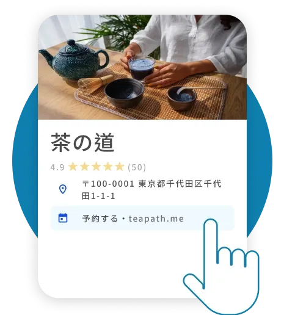
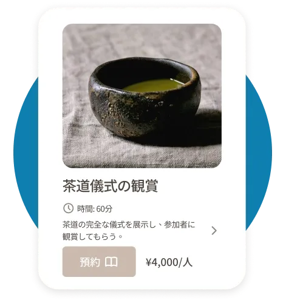
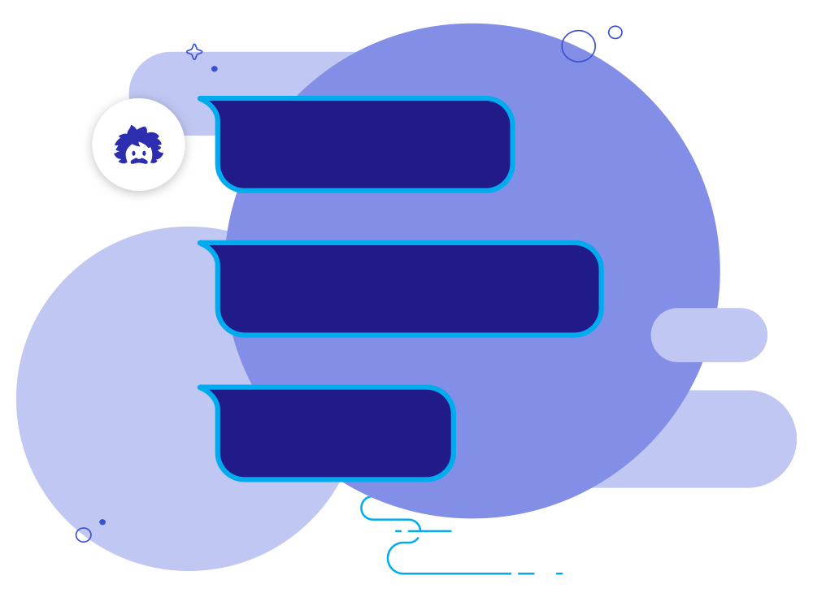
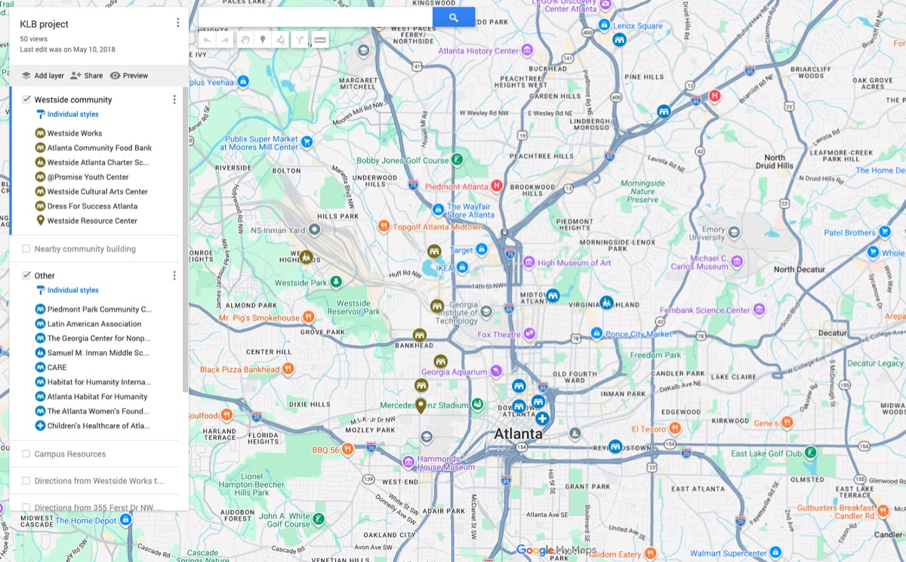
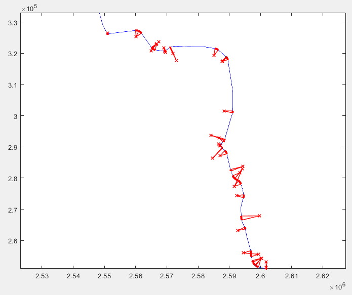
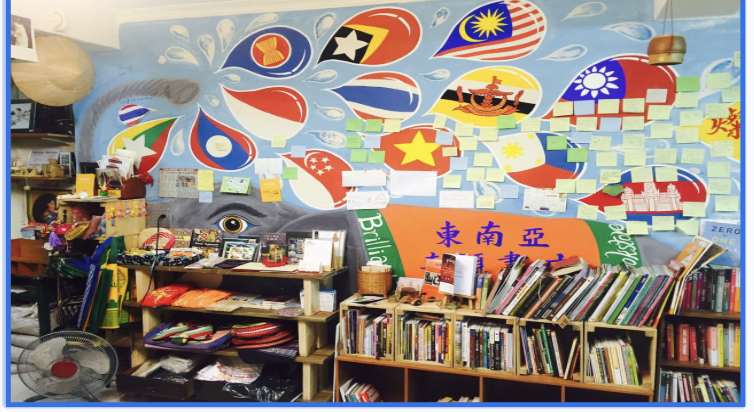

Cloud infrastructure
Reliable systems from software to the data center.
Eva HuangComputer Science + Sustainable Cities minor
I build software systems and products that focus on the infrastructure, energy, and cities for the future.

Reliable systems from software to the data center.
More resilient growth through supply, storage, and efficiency.
Infrastructure translated into better daily life.
Selected work


Reached 18% of revenue in three months.
Led WishMobile from product scope to customer launch.

Tenant isolation for critical AI/ML infrastructure.
Founding engineering work where AI scale and tenant isolation meet.
Turned a debugging SOP into reusable policy governance.
Led the shift from one-off customer debugging to governed policy.
A safe path from customer data to cloud durability.
Designed for safe replay, encrypted transit, and durable evidence.

Investigated how people access a sustainable building through four personas, user interviews, and GIS.
Connected a sustainable building initiative to the mobility needs of the people around it.

Turns LiDAR-derived centerlines into inspectable curvature evidence and GIS-ready segments.
The original arc-fit graph, now paired with a working curvature demo.

Selected for the Geographic Olympiad; combined field visits, GIS, surveys, and user interviews across five community sites.
Co-authored research on how community spaces shape cultural identity and belonging.
The study found that bookstores and support spaces work at two scales: building everyday belonging for migrants while creating platforms for wider cross-cultural understanding.